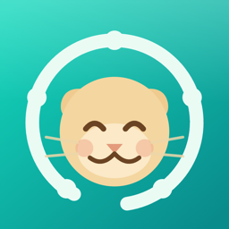
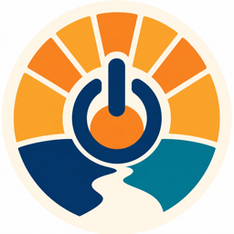

LLM Content Pipeline
7 blocking checks · 4 channels · 319 published
차단 검사 7종 · 채널 4개 · 누적 319건
A production workflow connecting market data, scripts, voice, video, review, and publishing. Every output is checked against its source, and one mismatch stops the release.
시장 데이터 수집부터 원고, 음성, 영상, 검수, 배포까지 연결한 운영 워크플로우입니다. 생성물을 원본과 대조하고 불일치가 하나라도 있으면 다음 단계로 넘기지 않습니다.
Evidence: failed output cannot advance.
근거: 실패한 결과는 구조적으로 다음 단계에 진입할 수 없습니다.
LLM Wiki
750 tests passing · 3 human gates
테스트 750건 전부 통과 · 사람 승인 게이트 3지점
A 24/7 local knowledge system where agents collect, distill, and connect information. After a bidirectional sync deleted 171 files, the sync was rebuilt so destructive signals cannot be represented.
에이전트가 지식을 수집, 정제, 연결하는 24시간 로컬 시스템입니다. 양방향 동기화로 171개 파일이 삭제된 사고 뒤, 파괴 신호 자체를 표현할 수 없는 가산 전용 구조로 다시 설계했습니다.
Evidence: 750 tests pass in the verified environment.
근거: 검증 환경에서 테스트 750건이 전부 통과합니다.
GitHub →
ONDA
203 tests passing · built from 49 community posts
테스트 203건 전부 통과 · 커뮤니티 글 49건에서 출발
A no-install driving home for the Tesla browser. Real-car GPS and speech failures became regression tests, while voice assets without commercial-rights evidence are blocked from release.
Tesla 브라우저에서 설치 없이 쓰는 드라이빙 홈입니다. 실차에서 확인한 GPS와 음성 실패를 회귀 테스트로 고정했고, 상업 이용 권리 증거가 없는 음성 자산은 릴리스를 차단합니다.
Evidence: 26 test files, 203 tests passing.
근거: 테스트 파일 26개, 테스트 203건 전부 통과.
GitHub →

Signal Crew
iOS beta · TestFlight
iOS 베타 테스트 중
AI-native SaaS unifying work, collaboration, and finance into one dashboard for solo founders and small teams.
1인 창업자와 소규모 팀의 업무·협업·재무를 하나의 대시보드로 통합한 AI 네이티브 SaaS.
Proof: I ship, end to end.
증명: 끝까지 배포한다.
Website →
홈페이지 →
GitHub →

다시ON5060
Mission flagship · MVP live
미션 대표 프로젝트 · MVP 운영 중
AI accessibility for Koreans in their 50s–60s. Conversation-first, Korean-native, confidence by design.
5060 세대를 위한 AI 접근성 프로젝트. 대화 우선, 한국어 네이티브, 자신감을 주는 설계.
Proof: why I build at all.
증명: 왜 만드는가.
Try it →
써보기 →
GitHub →
세이프체크
Team of 5 · PM lead · shipped v7 prototype
5인 팀 · PM 리드 · v7 프로토타입 발표
Messenger security comparison service. User tests revealed people mistook us for antivirus, we redesigned the first screen around that finding and iterated v5→v7.
메신저 보안 비교·추천 서비스. 유저테스트 녹취에서 "백신앱 오해"를 발견, 첫 화면을 재설계하고 v5→v7 반복 후 발표를 마쳤습니다.
Proof: I lead teams with data, not opinions.
증명: 데이터로 팀을 이끈다.
린온
Team of 5 · team lead · hackathon build
5인 팀 · 팀 리더 · 해커톤 결과물
Children practice speaking by talking with characters from Korean folk tales. Every AI line passes a vocabulary gate tuned to ages 4 to 8, and a three-layer fallback keeps the session alive when speech or the model fails.
아이가 전래동화 인물과 목소리로 대화하며 말하기를 배웁니다. AI가 만든 모든 문장은 4~8세 어휘 게이트를 통과해야 나가고, 음성이나 모델이 죽어도 3단 폴백으로 활동이 끝까지 이어집니다.
Proof: safe decisions make a team fast.
증명: 안전한 결정 구조가 팀을 빠르게 한다.
Try it →
써보기 →